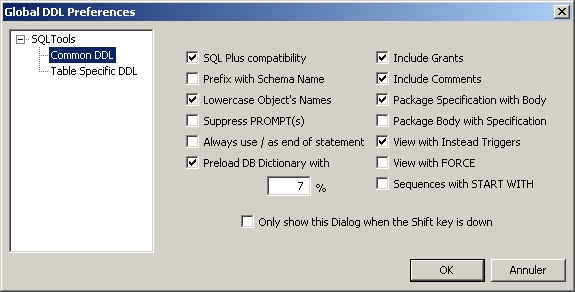
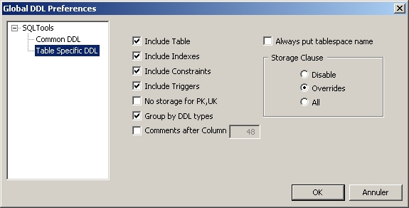

| DDL Preferences | Top |
This window appears when loading the DDL for an object (e.g. SQL script for a wiew) :
You can precise the options you want to apply (lowercase / uppercase object's names, prefix, etc.) and you can choose to see this windows only when Shift key is down, to prevent launching it at each DDL load.
Tables Specific DDL
This window is used to choose table-specific DDL preferences :

You can precise the options you want to apply for tables or views (see indexes, put tablespaces names, etc.)
See Load DDL Script.